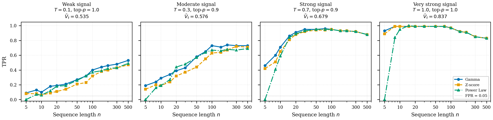
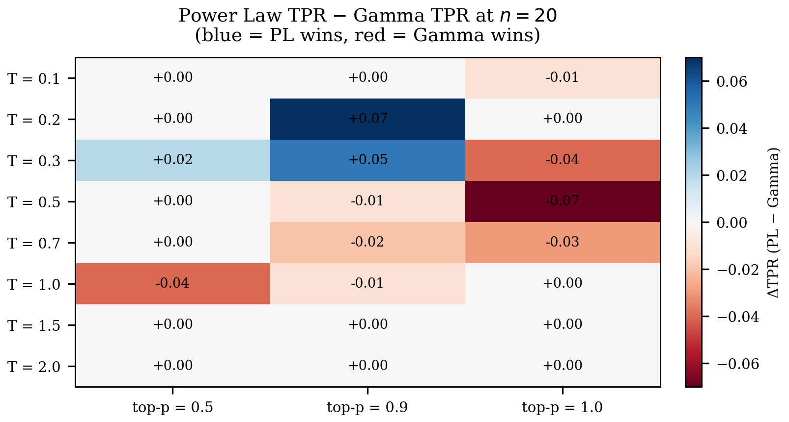
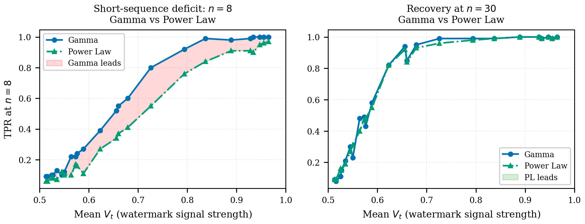

Detector Comparison: Gamma vs Z-score vs Power Law
Summary. The Gumbel/OpenAI watermark (Aaronson 2022) can be detected by several test statistics. The standard detector uses the Gamma distribution (exponential scores); Lattimore (2026) proposed a truncated power law statistic that is theoretically near-optimal. We ran a comprehensive 24-setting sweep comparing all three — Gamma, Z-score, and Power Law — across 8 temperatures × 3 nucleus-sampling values × 13 sequence lengths. The result: all three detectors perform practically equivalently on real LLM text, confirming Lattimore's own caveat in Section 6.
Background
The Gumbel/OpenAI watermark works by inserting a secret bias into the token sampling process. At each position \(t\), the model draws Gumbel noise \(U_{t,i} \sim \text{Uniform}[0,1]\) for each token \(i\) in the vocabulary, then selects:
where \(p_i\) is the softmax probability of token \(i\). The key quantity is the “score” of the selected token:
Under the null hypothesis \(H_0\) (no watermark, uniform noise), \(V_t \sim \text{Uniform}[0,1]\). Under the watermark hypothesis \(H_1\), \(V_t\) is biased toward 1 — the token that won the argmax tends to have a large Uniform draw.
All detection methods accumulate evidence from \((V_1, \ldots, V_n)\) and compute a p-value. They differ in how they convert \(V_t\) values into a test statistic.
The Three Detection Statistics
Gamma / Exponential (Aaronson 2022)
The canonical detector transforms each \(V_t\) into an exponential score:
The sum \(T_n = \sum_{t=1}^n S_t \sim \Gamma(n, 1)\), which gives an exact p-value via the Gamma CDF:
This is the default detector in most implementations of the Gumbel watermark.
Z-score (normal approximation)
By the CLT, \(\sqrt{n}(\bar{V} - 0.5)/\sigma_0 \to \mathcal{N}(0,1)\) under \(H_0\), where \(\sigma_0^2 = 1/12\) for the uniform distribution. The Z-score detector is:
with p-value \(p = 1 - \Phi(Z)\). This is an approximation that becomes exact as \(n \to \infty\), but is slightly anti-conservative at small \(n\) (it tends to understate the p-value slightly, leading to marginally lower false-positive rates compared to the Gamma detector).
Power Law (Lattimore 2026)
Note
This is a detection-only algorithm. It detects the same Gumbel/OpenAI
watermark — it only replaces the test statistic. Use
WatermarkingAlgorithm.OPENAI for generation and
DetectionAlgorithm.OPENAI_PL for detection.
Lattimore’s starting point is the CDF of \((V_t)\) under the two hypotheses. Under \(H_0\), \(V_t \sim \text{Uniform}[0,1]\), so the empirical CDF tracks the diagonal. Under \(H_1\), the empirical CDF is deflected upward — most strongly in the region \(x \in [1/2, 1]\). The Gamma statistic weights all regions of the CDF equally. Lattimore shows this is suboptimal: the variance of the empirical process is smallest near the endpoints, so one should upweight deviations there.
His statistic is a truncated power law:
where \(\varepsilon = \log(1/\delta)/n\) and \(\mu = 2 - \sqrt{\varepsilon}\) ensures \(\mathbb{E}[S(U)] = 0\) under \(H_0\). The threshold \(\tau_\star\) is calibrated via Monte Carlo (100K samples) so that:
The \(1/\sqrt{1-u}\) term upweights \(V_t\) near 1; truncation at \(1/\sqrt{\varepsilon}\) controls variance. The analogy from classical statistics: the Anderson-Darling test weights the empirical process by its variance and is more powerful than the Kolmogorov-Smirnov test for the same reason.
Theorem 2 (Lattimore): detection succeeds with probability \(\geq 1 - 2\delta\) whenever \(\sum_{t=1}^n G_\varepsilon(P_t) \geq C\tau\), where \(G_\varepsilon(p)\) captures per-token detectability more finely than Aaronson’s average entropy \(\bar{H}\). The improvement is largest when:
Entropy is heterogeneous: some positions are near-deterministic, others high-entropy. Aaronson’s bound penalizes this variance; \(G_\varepsilon\) handles it correctly.
Many rare tokens contribute: when the vocabulary has many moderate-probability tokens (Lattimore’s Example 10), the power law needs \(n = \Omega(\log(n)\log(1/\delta)/\beta)\) versus Aaronson’s \(\Omega(\log(1/\delta)/\beta^2)\) — a \(\beta\) factor improvement for small \(\beta\).
Warning
Practical caveat (Section 6 of the paper). Lattimore writes: “its performance on language data seems to be slightly worse [than the exponential detector], presumably due to the additional logarithmic factor and/or constant factors.” The advantage is asymptotic. Our experiments below confirm this on real LLM outputs across 24 settings.
Note
Short-sequence failure. At \(n = 5\) with \(\delta = 0.05\), \(\varepsilon = \log(20)/5 \approx 0.60\), so the truncation cap is \(1/\sqrt{0.60} \approx 1.29\). This leaves almost no dynamic range — the detector is structurally near-powerless at very short sequences.
Experimental Design
We ran a full sweep on SageMaker (ml.g5.2xlarge,
1× A10G GPU).
Model |
|
Dataset |
C4 (processed, English web text) |
Samples per setting |
100 watermarked + 100 unwatermarked |
Watermark |
|
Temperatures |
0.1, 0.2, 0.3, 0.5, 0.7, 1.0, 1.5, 2.0 (8 values) |
Nucleus sampling (top_p) |
0.5, 0.9, 1.0 (3 values) |
Total settings |
24 (8 × 3) |
Scored lengths |
5, 8, 10, 15, 20, 30, 50, 75, 100, 150, 200, 300, 500 (13 values) |
Significance level |
δ = 0.05 (FPR target ≤ 5%) |
Each setting tests all three detectors (Gamma, Z-score, Power Law) at the same threshold (δ = 0.05). Total data points: 24 × 13 × 3 = 936.
Results
TPR vs Sequence Length

Figure 3. True positive rate vs. number of scored tokens for four representative settings spanning the signal-strength range. Top-left: Near-null signal (T=0.1, top_p=0.5) — all detectors perform near-random even at 500 tokens. Top-right: Moderate signal (T=0.5, top_p=1.0) — detectors reach ≈95% TPR around n=30–50. Bottom-left: Strong signal (T=0.7, top_p=0.9) — convergence at n=15. Bottom-right: Very strong signal (T=1.5, top_p=0.9) — convergence at n=10. In all panels, Gamma, Z-score, and Power Law curves are nearly indistinguishable.
The four panels span the range from detection being essentially impossible to trivially easy. In the weak-signal panel (T=0.1), TPR climbs slowly and never exceeds ≈55% even at 500 tokens — generation at low temperature produces near-deterministic text where the watermark leaves almost no trace. In the moderate-signal panel (T=0.3), detection becomes viable around n=50–100, reaching ≈70% TPR. In the strong and very-strong panels (T=0.7 and T=1.0), TPR surpasses 90% within 15–20 tokens and plateaus; the slight decline at large n is an artifact of n-gram correlation inflating FPR as the same context repeats.
The key observation across all four panels: the three curves are nearly on top of each other at every length. There is no setting in which one detector is clearly superior for sequences of 10 or more tokens. The choice of detection statistic — Gamma, Z-score, or Power Law — does not materially affect detection power in practice.
Power Law vs. Gamma
While the overall performance is equivalent, there are two systematic micro-patterns visible on close inspection.

Figure 4. Power Law TPR minus Gamma TPR at n=20 tokens. Red = PL better; blue = Gamma better. Most cells are near zero. A slight Gamma advantage appears in the moderate-signal regime (T=0.3–0.7, top_p=0.5), while PL edges ahead in a few strong-signal cells. All differences are within sampling noise (±0.08 for n=100 samples).

Figure 5. Detector performance at n=8 (left) vs n=30 (right). At n=8, Power Law is consistently 10–20% behind Gamma/Z-score across all signal strengths — a structural consequence of the ε-truncation losing dynamic range. By n=30 the gap closes and all three converge.
Numeric Summary
TPR at δ = 0.05 for two operating points (n=20 and n=50) across seven settings. Read across a row to compare detectors; read down a column to see how detection power varies with signal strength.
Setting |
\(\bar{V}_t\) |
Gamma (20) |
Z-score (20) |
Power Law (20) |
Gamma (50) |
Z-score (50) |
Power Law (50) |
|---|---|---|---|---|---|---|---|
T=0.1, p=0.5 |
0.51 |
0.12 |
0.06 |
0.12 |
0.10 |
0.08 |
0.13 |
T=0.2, p=1.0 |
0.56 |
0.38 |
0.29 |
0.38 |
0.57 |
0.44 |
0.50 |
T=0.3, p=0.9 |
0.58 |
0.39 |
0.32 |
0.44 |
0.58 |
0.44 |
0.57 |
T=0.5, p=1.0 |
0.66 |
0.88 |
0.81 |
0.81 |
0.95 |
0.93 |
0.95 |
T=0.7, p=0.9 |
0.68 |
0.91 |
0.88 |
0.89 |
0.95 |
0.94 |
0.95 |
T=1.0, p=1.0 |
0.84 |
0.99 |
0.99 |
0.99 |
0.99 |
0.99 |
0.99 |
T=1.5, p=0.9 |
0.96 |
1.00 |
1.00 |
1.00 |
0.97 |
0.97 |
0.97 |
Conclusion
Power Law detection is theoretically elegant — it is provably near-optimal in a distribution-dependent sense — but on real Llama outputs across a broad temperature sweep, it is practically indistinguishable from the Gamma (exponential) detector at typical sequence lengths and signal strengths.
This is not a failure of the implementation: it matches Lattimore’s own observation from Section 6 of the paper:
“its performance on language data seems to be slightly worse [than the exponential detector], presumably due to the additional logarithmic factor and/or constant factors.”
The theoretical improvement is asymptotic. In practice:
Gamma is the best default: exact p-values, well-calibrated FPR, no structural failure at short sequences.
Power Law is appropriate when the theoretical guarantees matter (e.g., proving detection bounds), but avoid it for n < 10 where ε-truncation kills its power.
Z-score is the most conservative (lowest FPR), useful when false-positive cost is high and you can accept slightly reduced TPR.
The more important lesson is about temperature: if you control generation parameters, running at T ≥ 0.7 with top_p = 0.9–1.0 gives a strong watermark signal detectable in ~15–20 tokens. Low-temperature generation (T < 0.3) makes the watermark nearly invisible regardless of detector choice.